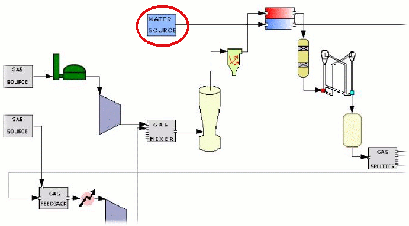
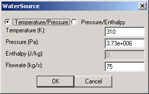

The Water Source Module serves to initiate a module network by allowing the user to specify the inital properties of a water stream. The module carries only a single output and is therefore only used as a specified water source. Heat Exchangers, Steam Turbines, HRSG's and syngas coolers all require water and would likely be coupled with the WaterSource module. |
 |
|  | This User Interface allows the user to specify either the desired temperature and pressure or pressure and enthalpy of the water source. The water flowrate is also a required input. Selecting OK saves the data for future network execution. |